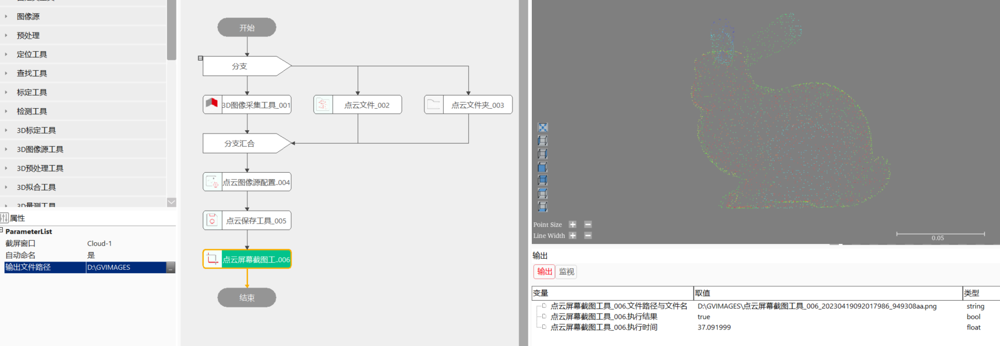

Chụp ảnh màn hình một cửa sổ Cloud đang hiển thị và lưu thành file ảnh định dạng PNG.
Trong các dự án đo lường và kiểm tra 3D, thường cần lưu lại ảnh chụp màn hình của các cửa sổ trong quá trình xử lý để xem lại sau này, đặc biệt là khi cần lưu ảnh đám mây điểm đang hiển thị.

Chưa có
| Tên tham số | Mô tả tham số |
|---|---|
| Tên file | Chỉ xuất hiện khi trong cửa sổ thuộc tính chọn “Tự động đặt tên” = Không. Tại đây có thể nối tên file đã chuẩn bị trước, có thể là tên đơn (ví dụ: cloud) hoặc tên kèm đường dẫn thư mục (ví dụ: 20230302\cloud) |
| Tên tham số | Mô tả tham số |
|---|---|
| Cửa sổ chụp màn hình | Chọn cửa sổ Cloud cần chụp (ví dụ: Cloud-1, Cloud-2…). Lưu ý: Nếu chưa có cửa sổ Cloud nào, cần tạo mới một Cloud View và kéo đám mây điểm muốn chụp vào đó trước. |
| Tự động đặt tên |
Không: phải nối “Tên file” từ chuỗi dữ liệu. Có: hệ thống tự tạo tên theo quy tắc: Tên công cụ + số thứ tự + thời gian + ID 8 ký tự, ví dụ: Công cụ chụp ảnh đám mây điểm_005_20230302104136644_f2eab9c4.png |
| Đường dẫn lưu file | Thư mục lưu ảnh chụp màn hình đám mây điểm |
| Tên tham số | Mô tả tham số |
|---|---|
| Đường dẫn và tên file | Đường dẫn đầy đủ kèm tên file ảnh đã lưu |
| Kết quả thực thi | Kết quả thực thi của công cụ |
| Thời gian thực thi | Thời gian chạy công cụ |
参见“\Samples\3D\点云\点云图像源配置工具.gvp”。